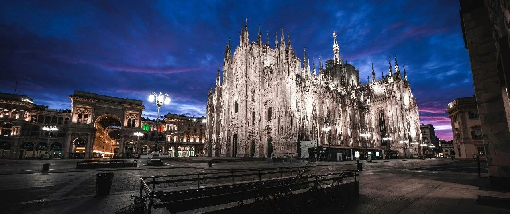

世界已经永远改变了~
昨天设置的一些卖出节点陆续被触发:
联合健康250.37美元加仓成功、诺和诺德47.68美元加仓成功。诺和诺德设置了40美元的防守价，联合健康没有设置。
生物医药板块普遍下跌，礼来跌2.63%，强生跌1.51%，默沙东跌4.44%…
原因在于川普致函17家主要制药公司，施压要求降低美国处方药品的价格，使之与海外价格齐平。
生物医药板块还是那句话:要往中长期去看，短期内没啥机会。
Meta以780美元的价格减仓5%，这5%属于底仓部分，后续的设置是790、800、810美元分别减仓5%，在780-810价格段合计减仓20%，预计不会那么快触发，需要较长时间;
目前Meta的成本降到了149.34美元，这些设置都触发后，Meta的成本会接近零成本或负成本。
之前谷歌186和192做T部分清仓后，7成底仓一直持有至今，这部分在220美元之前没考虑减仓做低成本/负成本，目前谷歌的成本很低，几乎可以忽略不计。
谷歌反垄断上诉失败，应用商店运营策略将被迫改变，包括允许用户直接下载第三方应用商店等。谷歌的利空还未完全散去，这是我准备长期持有谷歌的原因，中长期来看，谷歌还是很不错的。
苹果盘后上涨2.42%，目前212美元。原因是财报利好，第三财季营收940.4亿美元，同比增长10%，净利润244.3亿美元，同比增长9%;在中国区的收入结束前两个季度的下滑，同比增长4%，营收153.69亿美元。
苹果短期内要修复220以上有难度，需要一定契机，一些利好的刺激，比如在人工智能方面的进步，或新品/芯片等方面的进展。
亚马逊财报很亮眼，第二季度净营收1677亿美元，同比增长13%;净利润182亿美元，同比增长35%，这两项数据都超出市场的预期。
但是，亚马逊盘后还是大跌了6.6%，目前218.6美元。原因在于:
云计算业务AWS净营收309亿美元，同比增长17%，大幅度落后于微软云业务Azure的39%和谷歌云业务的32%;
人工智能工作负载需求激增的背景下，AWS增长落后于微软和谷歌这俩竞争对手，市场会认为AWS正在落后。
我猜到了亚马逊财报利好，却忽略了AWS增速落后竞争对手这点。
亚马逊解决这点，需要做两个工作项:投入更多的时间和资金，建设足够的产能去满足客户的需求;为数据中心搞到充足的电力供应。
得益于这一轮的收益，目前不动产（房产、土地）的占比已经从22%+下降到10%，而美股/股权占比51%，各类保险、美债的占比19%，现金20%…
未来会继续选择向科技靠拢。
我最近半年在努力跟硅谷的朋友学习人工智能的相关知识和应用，获益匪浅。
这轮下跌大买特买科技股，跟我这半年对人工智能认知的进一步提升有密切关注。当然，逢低买入的操作，收益也很丰厚，毕竟连四处调集来的储备资金都在这一轮下跌中消耗过半。
近三十年，有三项改变世界的科技超级工具:
第一个是互联网，它引发了“空间革命”，用虚拟的聚合，跨越了现实的空间;催生出网站编辑、网店店主、网文作者、电竞选手，也引发了唱片谢幕和百货大楼凋零。
第二个是智能手机，它引发的是“时间革命”，让我们的工作、生活、娱乐，无时无刻不线上化;催生出新媒体人、视频主播、带货达人，也荒芜了路边报亭，淘汰掉胶卷和现金。
第三个是人工智能，虽然它目前还在前期的开始阶段，但已经极大提升了效率，改变人类思考和处理问题的方式，由此重塑世界，并有引发“思维革命”的迹象。
科技是第一生产力，如今，世界已经永远改变了。
我不能停留在原地，更新迭代、持续学习，是我所能做的，发挥自身的主观能动性。
… …
昨天和今天，带孩子们在米兰走了走。
米兰是时尚之都，阿玛尼、范思哲、芬迪、普拉达、古驰、华伦天奴、杜嘉班纳、Tods、Moschino等意大利时尚品牌的总部都在这。
米兰也是意大利工业和金融中心，集中了意大利90%的金融交易，最大的证券交易所和博览会也在此。
米兰有大量珍贵的文化艺术遗产及著名古迹:米兰大教堂、维多利亚二世拱廊、斯卡拉歌剧院、斯福尔扎城堡、和平门、达·芬奇名画《最后的晚餐》等。
昨天参观了三个。
米兰大教堂1386年开工，1965年完工，历时5个世纪，主教堂用白色大理石砌成，是欧洲最大的大理石建筑，也是世界上雕塑最多的建筑和尖塔最多的建筑，被誉为“大理石山”。
如果不是亲临现场，很难想象一个工程需要如此之久，大儿子说用语言难以描述它的雄壮，但可以由教堂的大支柱和巨大的空间，看到几百年前高等数学在这片土地上的应用。
仅雕像就有6000多座（外部2000多座），135个高耸的塔尖，其中最高的塔尖（108.5米）是镀金的圣母玛利亚雕像（4米），教堂内部可容纳3.5万人;
达·芬奇为此还发明了电梯;拿破仑1805年也曾在此加冕…
老二问我，这世上真有上帝或佛祖吗？
我说“心之所愿/念、愿念之所寄托，即是上帝/佛祖之所在”，也不知道她能不能懂。
相比法国、意大利这类信奉天主教（基督教的一个教派），我还是更喜欢英国/美国这类信奉新教（基督教的一个教派）的国家，整个社会有向上的力量。
维多利亚二世拱廊，就在米兰大教堂旁边，有象征亚美欧非四大洲的镶嵌画，华丽的穹顶、马赛克镶嵌地板、集中了众多奢侈品牌的购物区，这三个是主要看点。
斯福尔扎城堡在1450年重建（1368年建设被破坏），有图书馆、博物馆、雕刻馆，收藏了很多具有高艺术和历史价值的作品，如图书馆内有1500份名人手稿、雕刻馆有达·芬奇和米开朗琪罗的作品。
达·芬奇曾规划过该堡的水利工程和剧院内的机械结构。
回酒店的路上，小儿子说，他喜欢周游世界，看更多的风景，知更多的历史，遇更多的人。
媳妇调侃他“好吃懒做，就爱享乐”。小儿子一本正经地反驳:
不是，我只是想成为更优秀的自己，但爸爸说了，这要“读万卷书、行万里路、阅人无数，不为权所阻，不为谋所蔽，才有机会看懂世界和自己，从‘本我’中得见‘真我’，知自己是谁、要往哪去、做什么、怎么做”。
这话我去年带他们游历韩日美加澳新等八个地区时说过，没想到他还记得。
就这样吧。
免责声明：本人提供的信息仅供参考，不构成投资建议。本人的交易不代表任何立场；投资者应根据自身财务状况、投资目标等情况自主做出投资决策并承担投资风险。投资有风险，入市需谨慎。